MiniLyrics Is Gone: The Best Alternatives in 2026
Why MiniLyrics died, and the best no-install ways to get synced lyrics today.
How-to posts on the LRC format, timing lyrics by ear, and getting synced lyrics working in popular players. Everything below pairs with the Lyricron app.
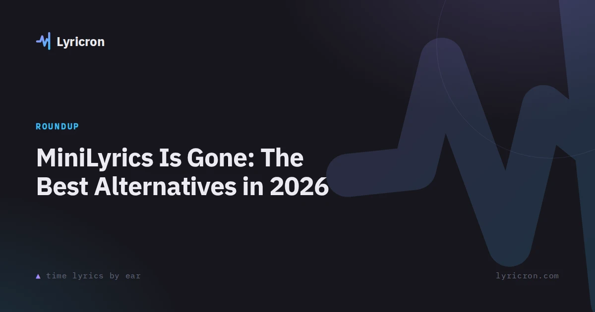
Why MiniLyrics died, and the best no-install ways to get synced lyrics today.
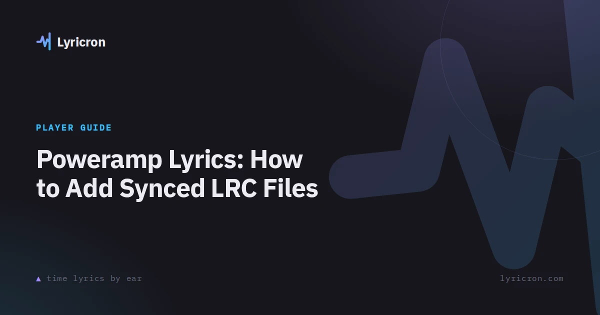
Poweramp's lyrics support, where files go, and how to fix drift.
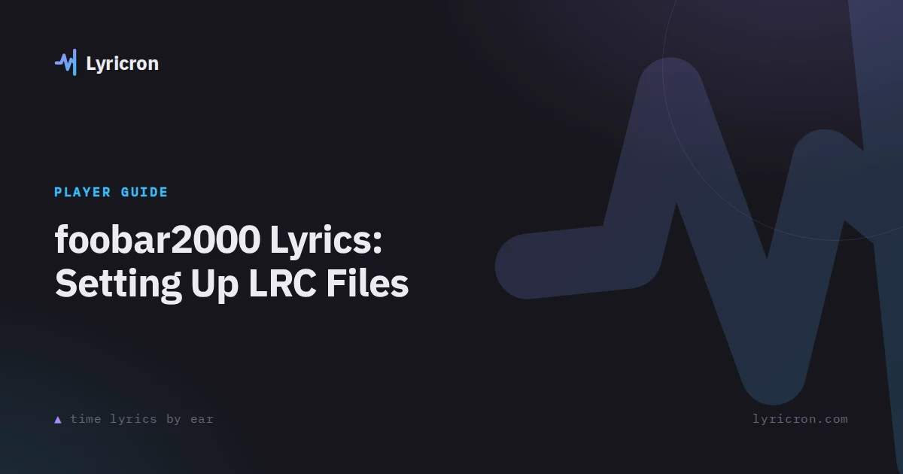
The lyrics panel, loading .lrc files, and syncing unsynced lyrics.
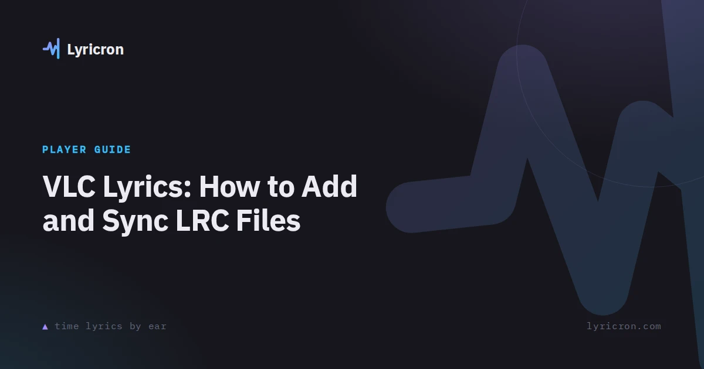
Enabling the lyrics view, file naming rules, and offset fixes for VLC.
Musicolet's LRC support, where files go, and making your own with Lyricron.
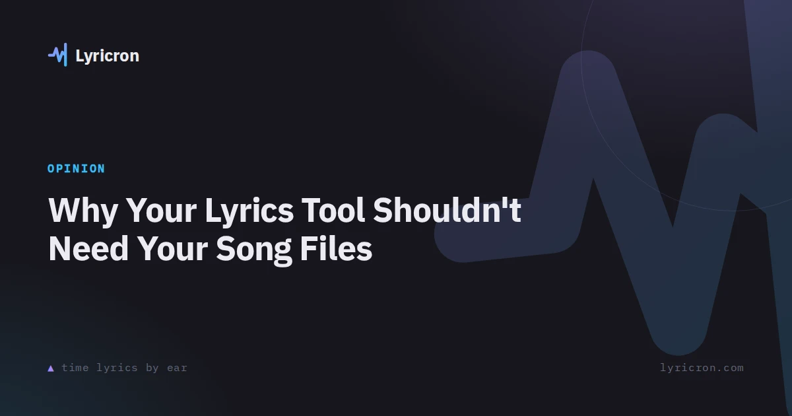
The no-upload argument, local-first architecture, and a privacy checklist.
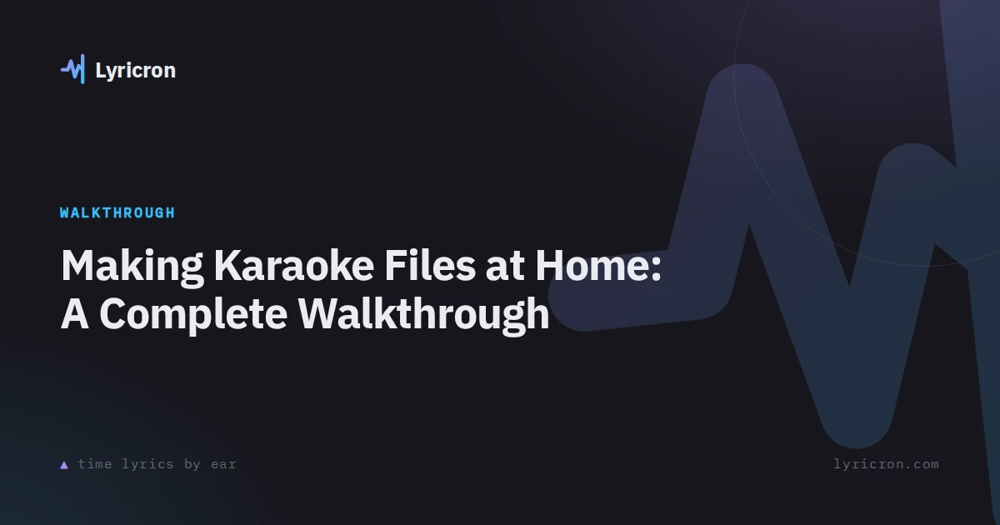
From lyrics to a synced file you can play in any karaoke app.
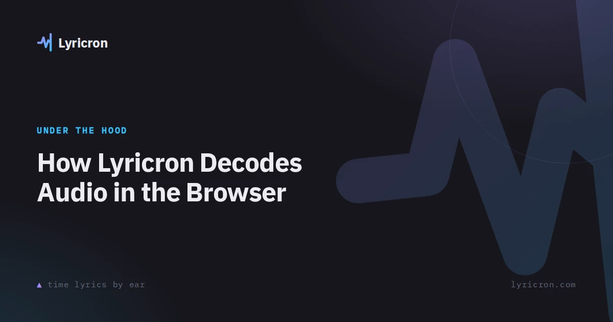
Web Audio API decoding, VBR drift, and offline-first storage.
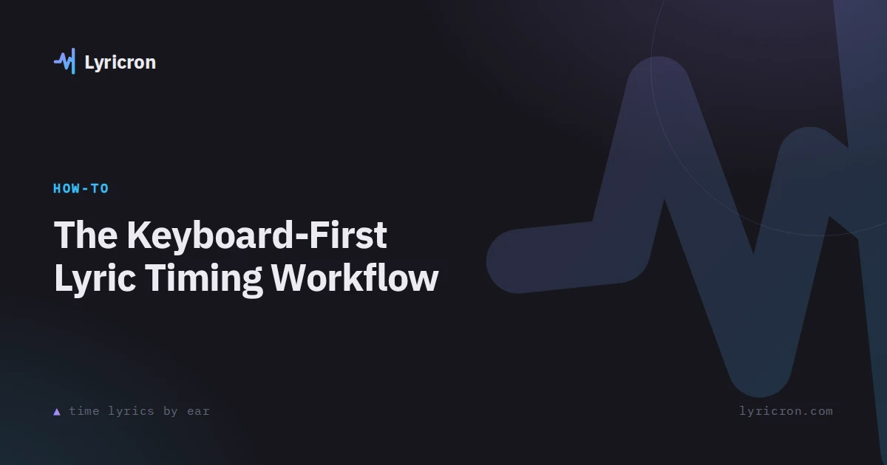
Annotate, undo, seek, and nudge in one pass without touching the mouse.
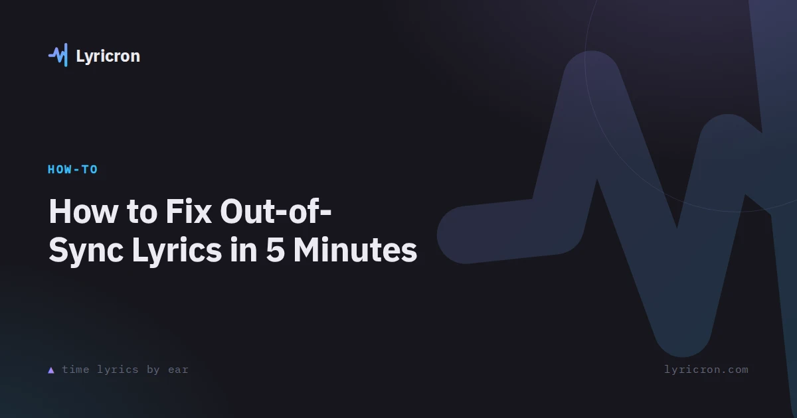
Why lyrics drift, ±50 ms nudging, shift-all, and the offset tag.
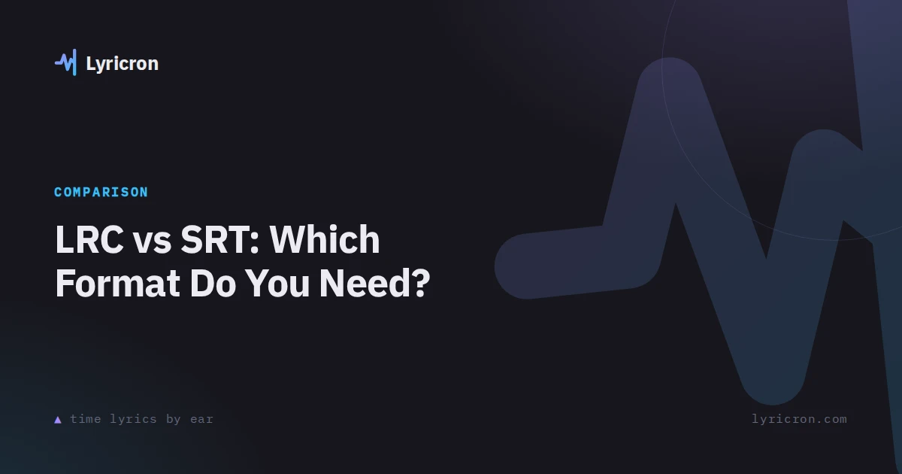
What each format is, when to use which, and how to convert.
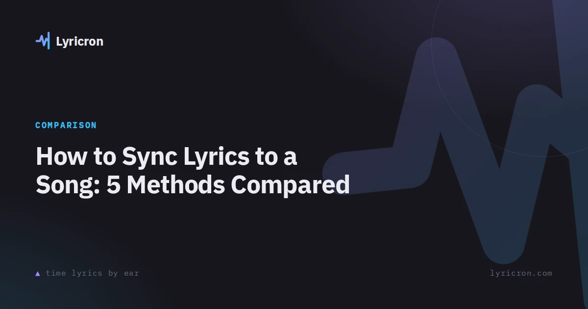
By-ear tapping, other players' timestamps, auto-sync tools, and more.
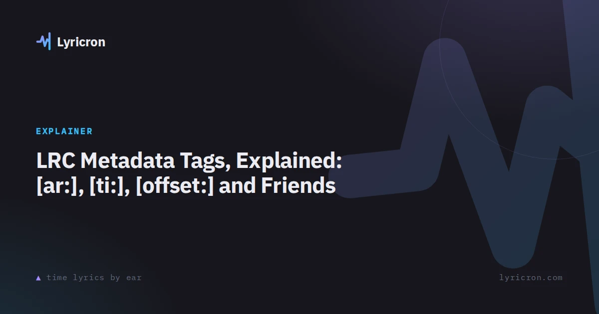
Every metadata tag in the LRC format, which players honor them, and when to use them.